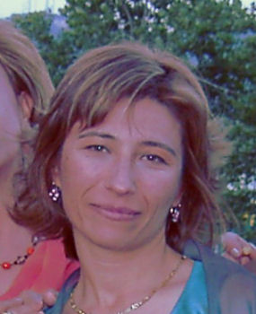

María José Pérez Martín
María José Pérez Martín 

 Haz clic aquí para detalles de la Familia de María José con Manuel García Hernández
Haz clic aquí para detalles de la Familia de María José con Manuel García Hernández
This page is within a frameset. View the entire genealogy report of Pérez Martín families, or surname index of Pérez Martín pedigrees or report summary of Pérez Martín heritage from "Árbol Genealógico de Manolo y Amalia".
Drawing a Family Tree.
© 2006 GenoPro Inc. All Rights Reserved.